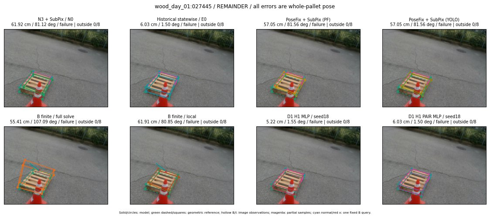

Whole-pallet pose errors; reference is a fixed geometric annotation, not certified physical GT.

Scores are uncalibrated logits. N0 retention is a numerical pose alias; it differs from H0 none or B fallback. B/I and profiles in baseline/B panels are original observations; L panels use new D1 observations. Only one deterministic supported B query is shown in a thumbnail; full support counts are below. Grey privacy rectangles edit the display copy only and are unrelated to O states; all observations were measured on original pixels. Thumbnails use JPEG quality85; detailed scientific panels are PNG.
| Method | Whole pose / cm, deg | Actual source | Selected ID | Score | Archived candidates | Eligible | N0 retained | H0 none | Fallback | Finite profiles |
|---|---|---|---|---|---|---|---|---|---|---|
| Raw YOLO + F | 60.43 cm / 81.80 deg / failure | OTHER | None | N/A | N/A | N/A | False | N/A | None | N/A |
| N3 + SubPix / N0 | 61.92 cm / 81.12 deg / failure | N0 | None | N/A | N/A | N/A | True | N/A | None | N/A |
| Historical statewise / E0 | 6.03 cm / 1.50 deg / failure | E0_REGENERATED | None | N/A | N/A | N/A | False | N/A | False | N/A |
| PoseFix raw | 56.39 cm / 81.70 deg / failure | OTHER | None | N/A | N/A | N/A | False | N/A | None | N/A |
| PoseFix + SubPix (PF) | 57.05 cm / 81.56 deg / failure | OTHER | None | N/A | N/A | N/A | False | N/A | False | historical support records 9; finite audit N/A |
| PoseFix + SubPix (YOLO) | 57.05 cm / 81.56 deg / failure | OTHER | None | N/A | N/A | N/A | False | N/A | False | historical support records 9; finite audit N/A |
| Historical L, seed18 | 61.92 cm / 81.12 deg / failure | N0 | N0 | N/A | 68 | 67 | True | True | True | N/A |
| Historical B fixed bank | 6.03 cm / 1.50 deg / failure | OTHER | LOGGED/G13/SWAPPED_WD/outline_consider/67 | N/A | N/A | N/A | False | N/A | False | N/A |
| Historical B full | 52.69 cm / 84.00 deg / failure | OTHER | NEW/B/ORIGINAL_WD/h0/G13/ORIGINAL_WD/sample/0/PROPOSED_NATIVE_YAW_0 | N/A | N/A | N/A | False | N/A | False | N/A |
| Historical edge full | 51.45 cm / 5.08 deg / failure | OTHER | NEW/edge/SWAPPED_WD/h0/G13/SWAPPED_WD/sample/0/PROPOSED_NATIVE_YAW_0 | N/A | N/A | N/A | False | N/A | False | N/A |
| Historical AB full | 15.67 cm / 5.48 deg / failure | OTHER | NEW/AB/SWAPPED_WD/h0/G13/SWAPPED_WD/sample/0/PROPOSED_NATIVE_YAW_0 | N/A | N/A | N/A | False | N/A | False | N/A |
| B finite / fixed bank | 6.03 cm / 1.50 deg / failure | OTHER | LOGGED/G13/SWAPPED_WD/outline_consider/67 | N/A | N/A | N/A | False | N/A | False | 2/2 |
| B finite / full solve | 55.41 cm / 107.09 deg / failure | OTHER | NEW_FINITE/B/SWAPPED_WD/h1/G10/ORIGINAL_WD/sample/7/PROPOSED_NATIVE_YAW_1 | N/A | N/A | N/A | False | N/A | False | 2/2 |
| B finite / local | 61.91 cm / 80.85 deg / failure | OTHER | NEW_FINITE/B/ORIGINAL_WD/h0/N0_LOCAL_SAME_PHYSICAL_POSE/ORIGINAL_WD | N/A | N/A | N/A | False | N/A | False | 2/2 |
| Edge finite / full solve | 35.05 cm / 3.78 deg / failure | OTHER | NEW_FINITE/edge/SWAPPED_WD/h3/G10/ORIGINAL_WD/sample/1/PROPOSED_NATIVE_YAW_3 | N/A | N/A | N/A | False | N/A | False | 2/2 |
| D0 H0 MLP / seed18 | 61.92 cm / 81.12 deg / failure | N0 | N0 | -0.09738266468048096 | 41 | 40 | True | True | True | N/A |
| D0 H0 MLP / seed19 | 61.92 cm / 81.12 deg / failure | N0 | N0 | -0.09199763089418411 | 41 | 40 | True | True | True | N/A |
| D0 H0 MLP / seed20 | 61.92 cm / 81.12 deg / failure | N0 | N0 | -3.232628583908081 | 41 | 40 | True | True | True | N/A |
| D0 H1 MLP / seed18 | 5.22 cm / 1.55 deg / failure | OTHER | G10/SWAPPED_WD/sample/1 | -4.1581807136535645 | 41 | 40 | False | False | False | N/A |
| D0 H1 MLP / seed19 | 5.22 cm / 1.55 deg / failure | OTHER | G10/SWAPPED_WD/sample/1 | -3.5603694915771484 | 41 | 40 | False | False | False | N/A |
| D0 H1 MLP / seed20 | 5.22 cm / 1.55 deg / failure | OTHER | G10/SWAPPED_WD/sample/1 | -5.009280681610107 | 41 | 40 | False | False | False | N/A |
| D1 H0 MLP / seed18 | 61.92 cm / 81.12 deg / failure | N0 | N0 | 5.962851047515869 | 41 | 40 | True | True | True | N/A |
| D1 H0 MLP / seed19 | 61.92 cm / 81.12 deg / failure | N0 | N0 | 5.479617595672607 | 41 | 40 | True | True | True | N/A |
| D1 H0 MLP / seed20 | 61.92 cm / 81.12 deg / failure | N0 | N0 | 5.163031101226807 | 41 | 40 | True | True | True | N/A |
| D1 H1 MLP / seed18 | 5.22 cm / 1.55 deg / failure | OTHER | G10/SWAPPED_WD/sample/1 | -2.5084311962127686 | 41 | 40 | False | False | False | N/A |
| D1 H1 MLP / seed19 | 5.22 cm / 1.55 deg / failure | OTHER | G10/SWAPPED_WD/sample/1 | -2.5471229553222656 | 41 | 40 | False | False | False | N/A |
| D1 H1 MLP / seed20 | 5.22 cm / 1.55 deg / failure | OTHER | G10/SWAPPED_WD/sample/1 | -3.514070987701416 | 41 | 40 | False | False | False | N/A |
| D1 H1 ROLE AFFINE / seed18 | 61.92 cm / 81.12 deg / failure | N0 | N0 | -0.905734658241272 | 41 | 40 | True | False | False | N/A |
| D1 H1 ROLE AFFINE / seed19 | 61.92 cm / 81.12 deg / failure | N0 | N0 | -0.6182103753089905 | 41 | 40 | True | False | False | N/A |
| D1 H1 ROLE AFFINE / seed20 | 61.92 cm / 81.12 deg / failure | N0 | N0 | -0.8859782218933105 | 41 | 40 | True | False | False | N/A |
| D1 H1 PAIR MLP / seed18 | 6.03 cm / 1.50 deg / failure | E0_REGENERATED | E0_REGENERATED | -2.3583061695098877 | 41 | 2 | False | False | False | N/A |
| D1 H1 PAIR MLP / seed19 | 61.92 cm / 81.12 deg / failure | N0 | N0 | -2.469980478286743 | 41 | 2 | True | False | False | N/A |
| D1 H1 PAIR MLP / seed20 | 61.92 cm / 81.12 deg / failure | N0 | N0 | -3.6641790866851807 | 41 | 2 | True | False | False | N/A |
| D1 H1 PAIR ROLE AFFINE / seed18 | 61.92 cm / 81.12 deg / failure | N0 | N0 | -1.3514741659164429 | 41 | 2 | True | False | False | N/A |
| D1 H1 PAIR ROLE AFFINE / seed19 | 61.92 cm / 81.12 deg / failure | N0 | N0 | -1.7772839069366455 | 41 | 2 | True | False | False | N/A |
| D1 H1 PAIR ROLE AFFINE / seed20 | 61.92 cm / 81.12 deg / failure | N0 | N0 | -1.3464518785476685 | 41 | 2 | True | False | False | N/A |
| Regenerated common E0 | 6.03 cm / 1.50 deg / failure | E0_REGENERATED | E0_REGENERATED | N/A | N/A | N/A | False | N/A | False | N/A |